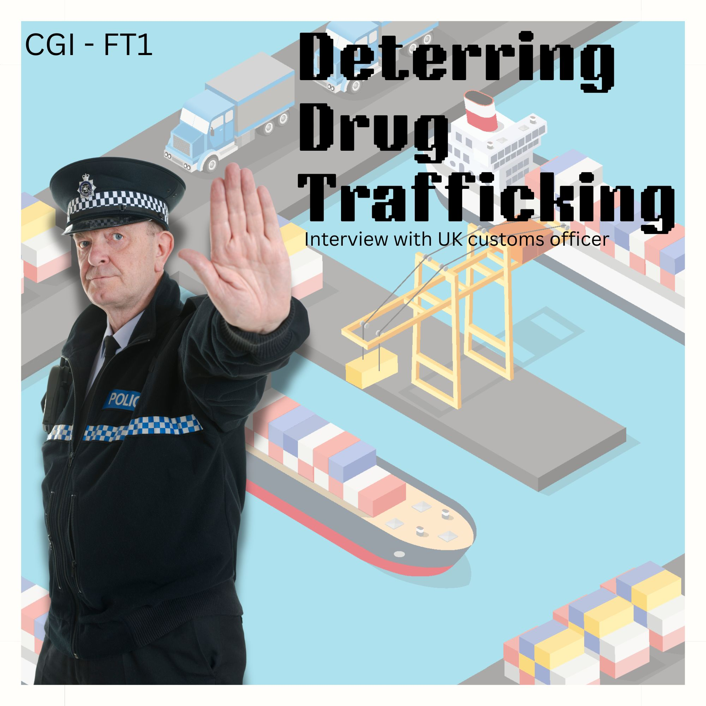

What is your role and what are your main responsibilities?
I'm a drug officer with the metropolitan police. As you know, I'm involved with that customs and border patrol. So my day-to-day job is just intercepting packages and illicit goods that people are trying to get across the border into the UK.
Okay, and how long have you worked in drug enforcement?
I've been doing this job for around 13 years now.
What does a typical day at work look like?
Every day is different. Well, a typical day at work is we've got scanners and when the customs officer, my colleagues, will flag a package that seems suspicious, or seems to detect any drugs under the x-ray, we would go down with the sniffer dogs, and the sniffer dogs point out where the drugs may be concealed, and then we would just track down where the package is meant to go to, and yeah, we take it from there, mate.
What's the most challenging part of your job?
Sometimes you have criminals who send packages to addresses and the receiver is not aware that they've received illicit goods. At times, they may be playing the fool, or they're not aware that these drugs are coming to their humble abode. So, you know, sometimes it's just a dead end with where the package is going to, and even the criminal involved — most of the time, the criminals are not even in the United Kingdom as we speak, they're mostly in Colombia and Mexico.
What are the most commonly trafficked drugs in this area / in your jurisdiction?
We've got cocaine, we've got methamphetamine, and then we've got fentanyl — which is a very new and deadly drug right now. And then you've got a lot of MDMA, Molly, ecstasy pills and things like that coming into the UK at the moment.
What methods do traffickers use to move drugs across borders or within the country?
They use all sorts of methods. They usually bring it in by sea or airplane, usually the seaport, or aircraft. You would see it in many different ways. You may see drugs hidden in so many different things, such as fruit, furniture, clothing, kids' toys — you never know, mate. We just gotta use scanners and get to the bottom of it.
What strategies are most effective in reducing drug trafficking?
Well, that's a very good question I would say. Mostly the main effective strategy we currently have is the x-ray scanners at the ports. We also have the sniffer dogs at the ports as well — as you may know. I would say those are the two most effective strategies at the moment.
Without sharing confidential information, can you describe a memorable case you worked on?
Well, yeah, I've had one package come in a few weeks ago. We've got these pipes coming in from one of those Latin American countries. I can't say too much about that, but yep, you've got like these PVC pipes that people usually use for swimming pools or plumbing in their home — normal construction materials I would say. Well, the PVC pipes were lined with cocaine. That's the most I can say at the moment, that cocaine has a street value of roughly £15 million!
If you could change one thing to make it easier to combat drug trafficking, what would it be?
Well, obviously, I would say people should stop using these drugs, 'cause there's demand — the demand that uses the one that's giving this demand, and that's why this drug thing is always popping up, mate.
Thank you. Is there anything else you'd like to add that you think is important for people to know about drug trafficking or your work?
Well, if anybody offers you any drugs, don't take it — don't do it. It's best to always get the police involved and let the police be aware of such things. You might be saving a life — a stranger's life, someone you may not know, someone who may be using drugs and may not be aware of the harmful effects of these drugs. So yeah, if you know anybody that may be involved with anything such as that, just get the police a ring and they'll help you out.